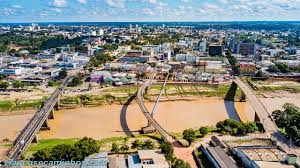

O Acre é um estado localizado na região Norte do Brasil, com uma população de cerca de 900 mil habitantes. Sua capital é Rio Branco, uma cidade que combina belezas naturais com uma cultura rica e diversificada. O governador atual é Gladson Cameli. A economia do Acre é baseada principalmente na agricultura, com destaque para a produção de soja, milho, feijão e frutas, além da pecuária. O estado também investe no setor de serviços e no turismo ecológico, aproveitando suas florestas e rios exuberantes para atrair visitantes e promover o desenvolvimento sustentável.
